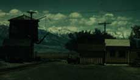
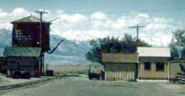

99-06-17
99-06-17
 There are six contributors to these photos besides myself: Orin Palmer, Don Winslow, Rictor Swing, Craig Tice, Denise Showalter and Paul Fritcher.
There are six contributors to these photos besides myself: Orin Palmer, Don Winslow, Rictor Swing, Craig Tice, Denise Showalter and Paul Fritcher.
Orin's photos were taken in 1998. Don's are from the 50's and 60's, Rictor's are from the 60s, Craig's are from the 70s, and Paul's, Denise's and mine are from the 90s.
Some of these photos have been ravaged by time. I have done what I could to get whatever image was left to show up.
A before and after image shows you what I was up against:
BEFORE:

AFTER:
If you have more info on the subjects in the photos, send it to me and I will add it.

Southern Pacific Narrow Gauge
From Orin Palmer:
230 photos from Orin
From Rictor Swing:
At Water tank
Freight cars
Out on the line
Coming closer
Coming into town
In the shade
Frieght Train
Freight Train
At Keeler, CA
At Laws, CA
From Craig Tice:
Keeler Depot
Keeler 2
Keeler 3
Keeler 4
Laws Freight House, end view
Laws Freight House, with platform
Laws Freight House, freight interior
Laws Freight House, office interior
Trestle
From Paul Fritcher:
SP #8 at Sparks, NV (on display by Nevada State Railroad Museum)
SP #8 interior detail
Postal Baggage #12 at Traveltown, Griffith Park, CA
Postal Baggage #12, oblique side view
Stock Car #15 at Traveltown, Griffith Park, CA
Boxcar #18 at Traveltown, Griffith Park, CA
Trestle, top view
Trestle, side view
Drainage Culvert, Montgomery Pass
Drainage Culvert, Montgomery Pass
Sign, Mound House, NV
Tunnel, Montgomery Pass
Tunnel, Montgomery Pass
Tunnel, Montgomery Pass
Rock Retaining Wall on Right-Of-Way
Carter Brothers Ventilated Boxcar (photos by Denise Showalter):
Carter Brothers Car Project

West Side Lumber Company
From Rictor Swing (descriptions by Christian Mastor):
Engines at Tuolumne Yards
Work train on engine storage track
Flats loaded with ties and the caboose are the work train.
Heisler #2 is not part of the work train, but it was placed out of service on this siding.
The view is to the north.
View looking north from enginehouse
The loaded log train is at the brow log waiting to be unloaded.
On the right is the mothballed Heisler #2
The tracks in the immediate foreground lead into the enginehouse.
Pickering

Sierra Railway
From Rictor Swing (descriptions by Rich Hill, SPCRR and Perry Van der Hurst):
Articulated mallet #38 at Jamestown.
#38 on a fan trip, above Cooperstown.
#38 on a fan trip, between Pausell and Cooperstown.
Carhouse and Caboose #1
One of the carhouses behind the roundhouse at Jamestown.
The caboose is side-door caboose #1.
Caboose #7 was homemade and quite similar
in looks to #9 (still at Jamestown)
except it had one less window on each side.
The coach is probably #2, one of the movie cars
(#5 and #6 were short Angels Branch cars - they had different roof ends).

Rio Grande Southern
From Don Winslow:
RGS #20, crossing trestle at Franklin Junction, CO 6-4-51
RGS #40, Ridgeway, CO 7-1-41 (yes '41!)
RGS #42, Delores, CO 9-15-52
RGS #74, Telluride, CO 9-1-51
RGS #461, 9-16-52

Cumbres & Toltec Scenic Railroad - D&RGW
From my visits to Chama, New Mexico:
C&TS gondola #756, end view
C&TS gondola #756, side view
C&TS gondola #756, side view
Burned boxcar, side view
Door Latch
Door Hanger
Snow Plow OY
DRGW Truck
Boxcar #3014

Denver & Rio Grande Western
Even more photos taken in the 60's by Don Winslow.


All photographs ©1998, Rick Blanchard, Rictor Swing, Craig Tice,
Don Winslow,
Denise Showalter and Paul Fritcher. Used with permission. All rights reserved.
web pages ©1998 blanchard design,
all rights reserved.